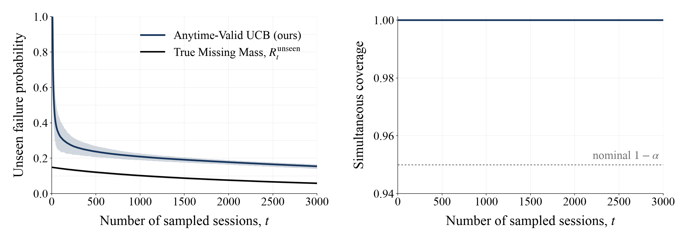

Bound and coverage panels: PAC tuned at ε=0.10; 1,000 trials through 3,000 draws. Coverage: ground truth 97.3%, PAC 100%. Bounds use mean curves and central 95% trial bands.
Additional stopping cost: mean paired difference between PAC and ground-truth stopping times, at the two evaluated tolerances 0.10 and 0.15, using the full 10,000-draw follow-up. These points do not represent a dense threshold sweep.
Although the predictor is imperfect, PAC queried every ground-truth label before stopping in these runs. The panel represents PAC-corrected labeling, not raw uncorrected predictions.